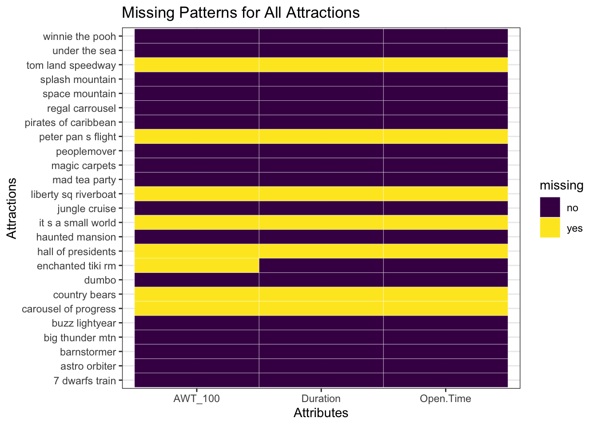

Chapter 4 Results
×
4.1 Waiting Time Pattern Analysis
## [1] "data.frame"## X Datetime Waiting.Time
## 1 0 2015-01-01 09:02:13 10
## 2 1 2015-01-01 09:09:16 10
## 3 2 2015-01-01 09:16:12 10
## 4 3 2015-01-01 09:22:35 10
## 5 4 2015-01-01 09:23:12 10
## 6 5 2015-01-01 09:29:12 10
4.1.1 Identify cyclical patterns
## X Datetime Waiting.Time
## 1 0 2015-01-01 09:02:13 10
## 2 1 2015-01-01 09:09:16 10
## 3 2 2015-01-01 09:16:12 10
## 4 3 2015-01-01 09:22:35 10
## 5 4 2015-01-01 09:23:12 10
## 6 5 2015-01-01 09:29:12 10## # A tibble: 6 × 3
## Datetime avg yr
## <date> <dbl> <dbl>
## 1 2015-01-01 31.2 2015
## 2 2015-01-02 33.0 2015
## 3 2015-01-03 24.1 2015
## 4 2015-01-04 16.3 2015
## 5 2015-01-05 20.4 2015
## 6 2015-01-06 16.7 2015## # A tibble: 100 × 3
## Datetime avg yr
## <date> <dbl> <dbl>
## 1 2015-01-01 31.2 2015
## 2 2015-01-02 33.0 2015
## 3 2015-01-03 24.1 2015
## 4 2015-01-04 16.3 2015
## 5 2015-01-05 20.4 2015
## 6 2015-01-06 16.7 2015
## 7 2015-01-07 12.8 2015
## 8 2015-01-08 11.7 2015
## 9 2015-01-09 12.2 2015
## 10 2015-01-10 21.6 2015
## 11 2015-01-11 11.9 2015
## 12 2015-01-12 10.6 2015
## 13 2015-01-13 12.5 2015
## 14 2015-01-14 12.0 2015
## 15 2015-01-15 11.1 2015
## 16 2015-01-16 26.0 2015
## 17 2015-01-17 28.7 2015
## 18 2015-01-18 23.4 2015
## 19 2015-01-19 20.5 2015
## 20 2015-01-20 20.6 2015
## 21 2015-01-21 12.7 2015
## 22 2015-01-22 15.9 2015
## 23 2015-01-23 12.6 2015
## 24 2015-01-24 21.3 2015
## 25 2015-01-25 21.4 2015
## 26 2015-01-26 13.5 2015
## 27 2015-01-27 18.1 2015
## 28 2015-01-28 8.67 2015
## 29 2015-01-29 5.98 2015
## 30 2015-01-30 16.7 2015
## 31 2015-01-31 29.7 2015
## 32 2015-02-01 16.2 2015
## 33 2015-02-02 10 2015
## 34 2015-02-03 16.8 2015
## 35 2015-02-04 12.5 2015
## 36 2015-02-05 11.1 2015
## 37 2015-02-06 20.3 2015
## 38 2015-02-07 21.9 2015
## 39 2015-02-08 13.1 2015
## 40 2015-02-09 11.4 2015
## 41 2015-02-10 18.2 2015
## 42 2015-02-11 13.5 2015
## 43 2015-02-12 17.9 2015
## 44 2015-02-13 21.7 2015
## 45 2015-02-14 34.3 2015
## 46 2015-02-15 32.2 2015
## 47 2015-02-16 30.4 2015
## 48 2015-02-17 18.4 2015
## 49 2015-02-18 29.6 2015
## 50 2015-02-19 19.7 2015
## 51 2015-02-20 21.3 2015
## 52 2015-02-21 31.6 2015
## 53 2015-02-22 18.8 2015
## 54 2015-02-23 25.0 2015
## 55 2015-02-24 19.1 2015
## 56 2015-02-25 16.0 2015
## 57 2015-02-26 15.4 2015
## 58 2015-02-27 21.8 2015
## 59 2015-02-28 17.2 2015
## 60 2015-03-01 21.1 2015
## 61 2015-03-02 21.7 2015
## 62 2015-03-03 18.9 2015
## 63 2015-03-04 12.1 2015
## 64 2015-03-05 14.7 2015
## 65 2015-03-06 17.9 2015
## 66 2015-03-07 26.5 2015
## 67 2015-03-08 19.0 2015
## 68 2015-03-09 27 2015
## 69 2015-03-10 21.3 2015
## 70 2015-03-11 13.2 2015
## 71 2015-03-12 22.6 2015
## 72 2015-03-13 18.2 2015
## 73 2015-03-14 26.8 2015
## 74 2015-03-15 15.9 2015
## 75 2015-03-16 27.2 2015
## 76 2015-03-17 23.3 2015
## 77 2015-03-18 23.6 2015
## 78 2015-03-19 20.8 2015
## 79 2015-03-20 19.7 2015
## 80 2015-03-21 26.1 2015
## 81 2015-03-22 17.1 2015
## 82 2015-03-23 16.2 2015
## 83 2015-03-24 35.2 2015
## 84 2015-03-25 21.5 2015
## 85 2015-03-26 24.9 2015
## 86 2015-03-27 29 2015
## 87 2015-03-28 26 2015
## 88 2015-03-29 37.7 2015
## 89 2015-03-30 39.3 2015
## 90 2015-03-31 31.6 2015
## 91 2015-04-02 29.5 2015
## 92 2015-04-03 25.0 2015
## 93 2015-04-04 24.3 2015
## 94 2015-04-05 24.6 2015
## 95 2015-04-06 43.1 2015
## 96 2015-04-07 46.2 2015
## 97 2015-04-08 42.0 2015
## 98 2015-04-09 31.1 2015
## 99 2015-04-10 26.0 2015
## 100 2015-04-11 21.0 2015## [1] "2020-01-01"## # A tibble: 100 × 3
## Datetime avg yr
## <date> <dbl> <dbl>
## 1 2015-01-01 31.2 2015
## 2 2015-01-02 33.0 2015
## 3 2015-01-03 24.1 2015
## 4 2015-01-04 16.3 2015
## 5 2015-01-05 20.4 2015
## 6 2015-01-06 16.7 2015
## 7 2015-01-07 12.8 2015
## 8 2015-01-08 11.7 2015
## 9 2015-01-09 12.2 2015
## 10 2015-01-10 21.6 2015
## # … with 90 more rows